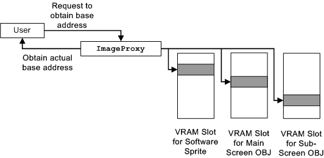

ImageProxy exists in the G2D Library so you do not have to be concerned about switching the character data storage destination when the display destination changes. If the base address of the character data is requested from the user, ImageProxy determines how the character display is supposed to be displayed and returns the character base address stored in the appropriate VRAM slot. This organization is used for operations such as setting up VRAM information in upper utility level renderer modules. None.
2004/12/06 Initial version.
CONFIDENTIAL